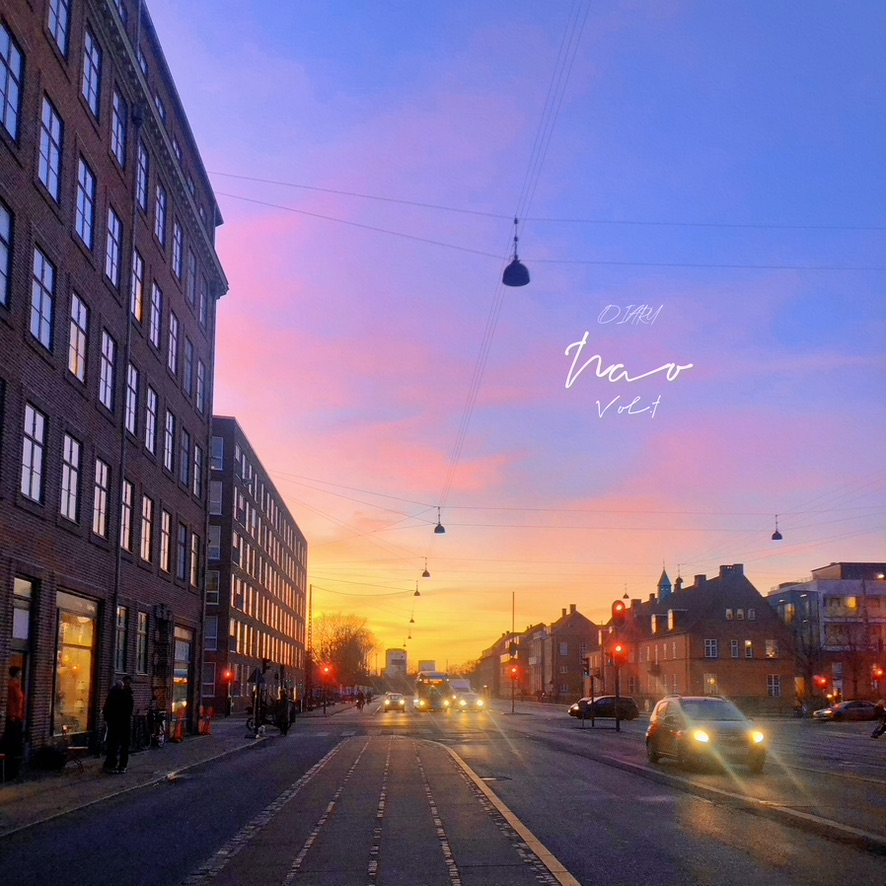
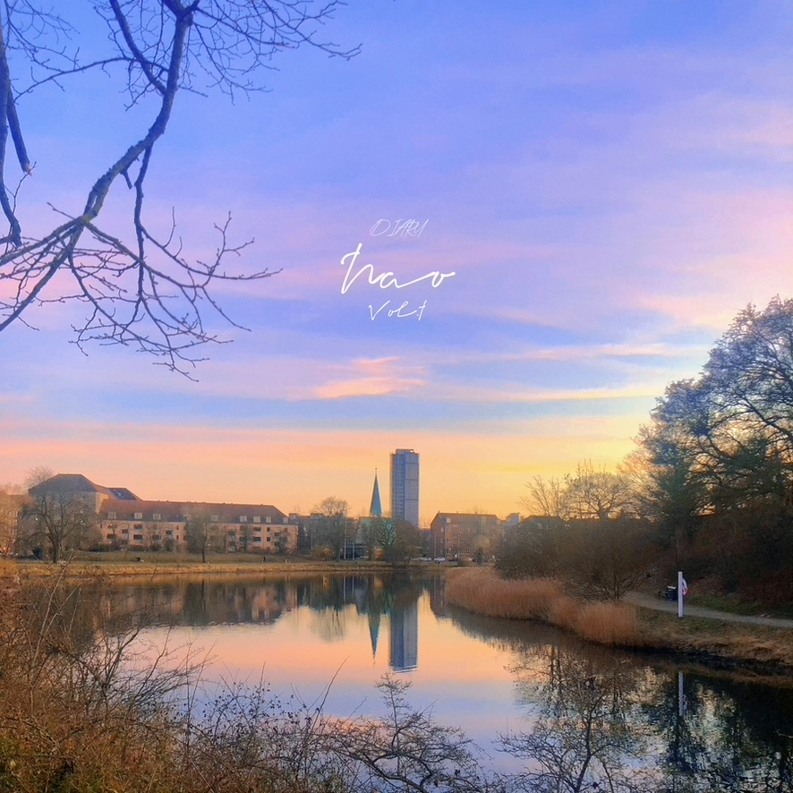

(English after Chinese) 连续的晴天在三月的丹麦该是罕见的天气。但即使看似春光无限好， 气温还是让人（主要是我）对出门有些却步，更不用说掀翻整排自行车的狂风了。 经常看到朋友圈在南京或者京都的朋友喊着天气热，社交网络上也是一片秀桃花的景象。狠下心找了一个周末去公园遛弯，树还是秃得不能再秃得景象，不禁感叹为了这出门不值得。 本土的饮食还是很难习惯，加上哥本哈根的餐厅也是贵的离谱，除了食堂出门吃饭的选择倒是有了那么几个固定的去处。Vanlose有一家很喜欢的自助餐，焦糖布丁做得太到位了，但就是离家太远，每次来回就要用去一小时。上周末去Bao的朋友家吃了火锅之后，这周末他做了pho，简直是专业！不得不感叹厨房有天然气才是正经厨房啊。 It must be quite rare to have continuous sunny days in Denmark in March. However, even with the seemingly season of spring, the temperature is still daunting for people (mainly me) to go outside, let alone the fierce wind that can blow off the whole row of bicycles. I often saw friends in Nanjing or Kyoto complaining about the hot weather in Moments, as well as people showing off the scenes of peach blossoms. Finally we decided to take a walk in the park on a weekend, only to find bare and leafless trees. We could not help but sign that it was not worth going out for that. It is still tough for us to get used to the local food, plus the price of Copenhagen restaurants is outrageous, luckily we did get several choices besides the canteen in school. There is one buffet in Vanlose that we like a lot, and they make the best flan with caramel! It’s just too far away from us that we need to spend roughly one hour on the way. Since we had hotpot together with Bao’s friend at his place, he made pho this week and it was so delicious! I have to say that the kitchen with gas stoves is the real kitchen.
 